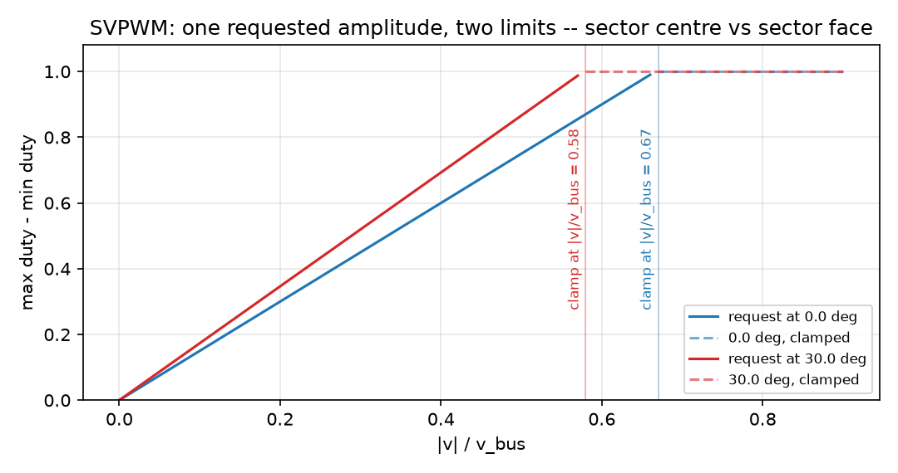

1.1.6. High speed and modulation
The task: turn the current loop's voltage request into three duties, know how much voltage the bridge can actually deliver, and stop lying about what it delivered when the pulses get short.
1.1.6.1. What you need
foc/core/svpwm.hpp-- the space-vector modulator. One request in, three duties and a saturated flag out.foc/core/min_pulse.hpp-- what a real gate driver does to a pulse it cannot transmit, and the volt-seconds that costs.foc/core/six_step.hpp-- the block-commutation alternative, from a hall code with a rate limit on the table.
1.1.6.2. A minimal program
docs/doxygen/dox/demos/modulation-limits.cxx sweeps a requested amplitude at
two electrical angles, shapes a narrow pulse, and walks the six-step table twice.
The same file produces this page's figure.
1// Modulation -- high speed and modulation: turn a voltage vector into duties, see
2// where the linear range ends, and see what a real gate driver does to a pulse
3// that is too short to transmit.
4//
5// Build it the way the `demo` gate does -- the example calls into the library, so the
6// sources are part of the command, and `-Iinclude` alone fails at the link. A renamed
7// source turns that gate red instead of leaving a stale instruction here:
8// g++ -std=c++17 -fno-exceptions -fno-rtti -Wall -Wextra -Werror -Iinclude
9// docs/doxygen/dox/demos/modulation-limits.cxx src/core/*.cpp
10// src/core/observer/*.cpp src/motor/*.cpp src/driver/*.cpp src/api/foc_api.c
11// src/api/bridge.cpp src/version.c
12// -o /tmp/modulation-limits
13//
14// With `--csv <path>` it writes the sweep as rows; `docs/demos/make_figures.py`
15// draws this example's figure from that file.
16//
17// 调制 —— 高速与调制：把一个电压矢量变成占空比、看清线性区的边界，以及真实驱动对
18// "短到送不出去"的脉冲做了什么。
19// 带 `--csv <path>` 时把扫描写成行；`docs/demos/make_figures.py` 用它画本片的图。
20
21#include <cmath>
22#include <cstdio>
23#include <cstring>
24
25#include <foc/core/min_pulse.hpp>
26#include <foc/core/six_step.hpp>
27#include <foc/core/svpwm.hpp>
28#include <foc/core/types.hpp>
29
30namespace {
31
32constexpr float kVBusV = 24.0F;
33constexpr float kSwitchingPeriodS = 50.0e-6F; // 20 kHz
34constexpr float kMinPulseS = 500.0e-9F; // what the driver can actually send
35constexpr float kTwoPi = 6.28318530718F;
36
37auto span(const foc::core::Uvw<float>& duty) noexcept -> float {
38 const float high = std::fmax(duty.u, std::fmax(duty.v, duty.w));
39 const float low = std::fmin(duty.u, std::fmin(duty.v, duty.w));
40 return high - low;
41}
42
43} // namespace
44
45auto main(int argc, char** argv) -> int {
46 const char* csv_path = nullptr;
47 if (argc == 3 && std::strcmp(argv[1], "--csv") == 0) {
48 csv_path = argv[2];
49 } else if (argc != 1) {
50 std::fprintf(stderr, "usage: %s [--csv <path>]\n", argv[0]);
51 return 2;
52 }
53
54 FILE* csv = nullptr;
55 if (csv_path != nullptr) {
56 csv = std::fopen(csv_path, "w");
57 if (csv == nullptr) {
58 std::perror("fopen");
59 return 1;
60 }
61 std::fprintf(csv, "angle_deg,v_pu,duty_span,saturated\n");
62 } else {
63 std::printf("v_bus = %.1f V, switching period %.1f us\n\n", static_cast<double>(kVBusV),
64 static_cast<double>(1.0e6F * kSwitchingPeriodS));
65 std::printf("%6s %8s %10s %10s %12s %s\n", "angle", "|v| (V)", "|v|/v_bus", "duty span", "saturated",
66 "duty u / v / w");
67 }
68
69 // Sweep the commanded voltage at two angles. The modulator's limit is **not
70 // a circle**: at a sector face the reachable amplitude is the inscribed
71 // circle, at a sector centre it is larger. So the same sweep at 0 and at 30
72 // electrical degrees clamps at two different amplitudes, and a reader who
73 // assumes one radius for the whole rotation will be wrong at half of it.
74 // 在两个角度上扫指令电压。调制器的边界**不是一个圆**：扇区边（面）上能达到的幅值是内切圆，
75 // 扇区中心更大。所以同样一条扫描在 0 度与 30 电角度上会在两个不同幅值处钳位；把整个旋转
76 // 当成一个半径的读者会在一半的位置上算错。
77 const float angles[2] = {0.0F, 30.0F};
78 for (const float angle_deg : angles) {
79 const float angle_rad = angle_deg * kTwoPi / 360.0F;
80 int previous_saturated = -1;
81 for (int step = 0; step <= 90; ++step) {
82 const float v_pu = 0.01F * static_cast<float>(step);
83 const float v_mag = v_pu * kVBusV;
84 const foc::core::Ab<float> request{v_mag * std::cos(angle_rad), v_mag * std::sin(angle_rad)};
85 const foc::core::SvpwmResult result = foc::core::Svpwm::modulate(request, kVBusV);
86 const int saturated = result.saturated ? 1 : 0;
87 if (csv != nullptr) {
88 std::fprintf(csv, "%.1f,%.4f,%.6f,%d\n", static_cast<double>(angle_deg), static_cast<double>(v_pu),
89 static_cast<double>(span(result.duty)), saturated);
90 } else if (saturated != previous_saturated || (step % 20) == 0) {
91 std::printf("%6.0f %8.2f %10.3f %10.4f %12s %7.4f %7.4f %7.4f\n", static_cast<double>(angle_deg),
92 static_cast<double>(v_mag), static_cast<double>(v_pu),
93 static_cast<double>(span(result.duty)), result.saturated ? "yes" : "no",
94 static_cast<double>(result.duty.u), static_cast<double>(result.duty.v),
95 static_cast<double>(result.duty.w));
96 previous_saturated = saturated;
97 }
98 }
99 }
100
101 if (csv != nullptr) {
102 std::fclose(csv);
103 std::printf("wrote %s\n", csv_path);
104 return 0;
105 }
106
107 // What the driver does to a narrow pulse. `lost_vs` is the volt-seconds the
108 // bridge will not deliver this period: positive means the phase gets less
109 // than it was asked for. A loop that does not know this number integrates an
110 // error its own feedback cannot see, because the bridge is inside the loop
111 // and the phase voltage is not measured.
112 // 驱动对窄脉冲做了什么。`lost_vs` 是本周期桥臂**不会**交付的伏秒：正数表示那一相拿到的
113 // 比要求少。不知道这个数的环路会积分一项它自己的反馈看不见的误差，因为桥臂在环内、相电压
114 // 又没有被测。
115 const foc::core::MinPulse min_pulse(foc::core::MinPulseConfig{kMinPulseS, kSwitchingPeriodS});
116 const foc::core::Uvw<float> request{0.001F, 0.5F, 0.999F};
117 std::printf("\nmin pulse %.0f ns of a %.1f us period; asking for one phase at 0.1 %% duty\n",
118 static_cast<double>(1.0e9F * kMinPulseS), static_cast<double>(1.0e6F * kSwitchingPeriodS));
119 const foc::core::MinPulseOutput shaped = min_pulse.apply(request, kVBusV);
120 std::printf(" status=%d narrowed=%s\n", static_cast<int>(shaped.status), shaped.narrowed ? "true" : "false");
121 std::printf(" requested duty %.4f %.4f %.4f\n", 0.001, 0.5, 0.999);
122 std::printf(" applied duty %.4f %.4f %.4f\n", static_cast<double>(shaped.duty.u),
123 static_cast<double>(shaped.duty.v), static_cast<double>(shaped.duty.w));
124 std::printf(" lost %.6f %.6f %.6f V*s\n", static_cast<double>(shaped.lost_vs.u),
125 static_cast<double>(shaped.lost_vs.v), static_cast<double>(shaped.lost_vs.w));
126
127 // Six-step: the same modulator question with the answer taken from a table.
128 // One hall code in, three duties out, and a rate limit on how fast the table
129 // may be walked -- a single false edge must not jump the vector by 120
130 // electrical degrees.
131 // 六步：同一个调制问题，答案来自一张表。一个霍尔码进、三个占空比出，并对"表能被走多快"
132 // 有速率限制——一个假的边沿不许把矢量一次跳过 120 电角度。
133 foc::core::SixStepConfig six_config{};
134 six_config.amplitude = 1.0F;
135 six_config.direction = foc::core::HallDirection::Forward;
136 six_config.max_step_sectors = 1U;
137 foc::core::SixStepCommutation six_step(six_config);
138 std::printf("\nsix-step, code 0b101 (sector 5):\n");
139 for (int index = 0; index < 2; ++index) {
140 const foc::core::SixStepOutput commuted = six_step.step(0b101U);
141 std::printf(" tick %d: sector %u duty %.4f %.4f %.4f\n", index, static_cast<unsigned>(commuted.sector),
142 static_cast<double>(commuted.duty.u), static_cast<double>(commuted.duty.v),
143 static_cast<double>(commuted.duty.w));
144 }
145 std::printf(" rejected=%u illegal=%u\n", static_cast<unsigned>(six_step.rejected()),
146 static_cast<unsigned>(six_step.illegal()));
147 return 0;
148}
1.1.6.3. Where the numbers come from
The DC link voltage sets everything. The modulator divides by it, so a sagging bus is a scaling error in every duty -- and the modulator answers Param with 50 % duties rather than producing NaNs when the bus is not positive.
The switching period and the driver's minimum pulse come from the gate driver's datasheet, not from the controller. They are the two numbers that make "commanded voltage" and "delivered voltage" differ at low duty.
The dead time belongs to the same datasheet and is the reason the modulator's input struct carries the measured currents at all: a dead-time term has the sign of the phase current, so a modulator that cannot see the current cannot compensate it.
1.1.6.4. How it goes wrong
One radius assumed for the whole rotation. The reachable set is a hexagon. A request that fits at a sector centre does not fit at a sector face, so an amplitude chosen from the best case clips once per revolution -- and the clipped region arrives as a sixth-order torque ripple rather than as a fault.
The clamp attributed to the controller. When the modulator clamps, the current loop keeps integrating against a voltage it did not get. Anti-windup belongs where the request is actually reduced, which is inside the modulator's caller, not in the PI's own limit.
Short pulses ignored. Below the driver's minimum pulse a phase either fires for the full period or not at all; the average voltage the loop believes it applied is then simply wrong. MinPulse reports the difference per phase, signed, so a caller can compensate or at least know.
An unrate-limited six-step table. A single false hall edge moves the vector 120 electrical degrees. max_step_sectors turns that into a refused step, and the rejections are counted where a telemetry channel can see them.
1.1.6.5. Evidence
Three claim rows cover this page -- foc/core/svpwm.hpp,
foc/core/min_pulse.hpp and foc/core/six_step.hpp -- and the level this
page may state is the minimum of those three. The numbers behind the two clamp
amplitudes live in those rows and in test_svpwm.cpp, not on this page.
What this page does not claim: mode II or vertex holding, and therefore not the last few percent of the fundamental; that a dropped minimum pulse can be separated from the dead-time window it takes with it, because the two do not separate by subtraction; or that six-step is competitive with field-oriented control, whose comparison that row measures and does not win.
1.1.6.6. Figure


Figure 1.6 the same amplitude sweep at 0 and at 30 electrical degrees: both grow linearly with the request, and they clamp at two different amplitudes
The figure is produced by docs/demos/make_figures.py from this page's own
example, and the clamp points are read from the run rather than printed from a
constant. What it does not show is the overmodulated fundamental: past the clamp
the modulator projects the request onto the hexagon, and what that does to the
output voltage needs a spectrum, which is what the claim row's cases measure.